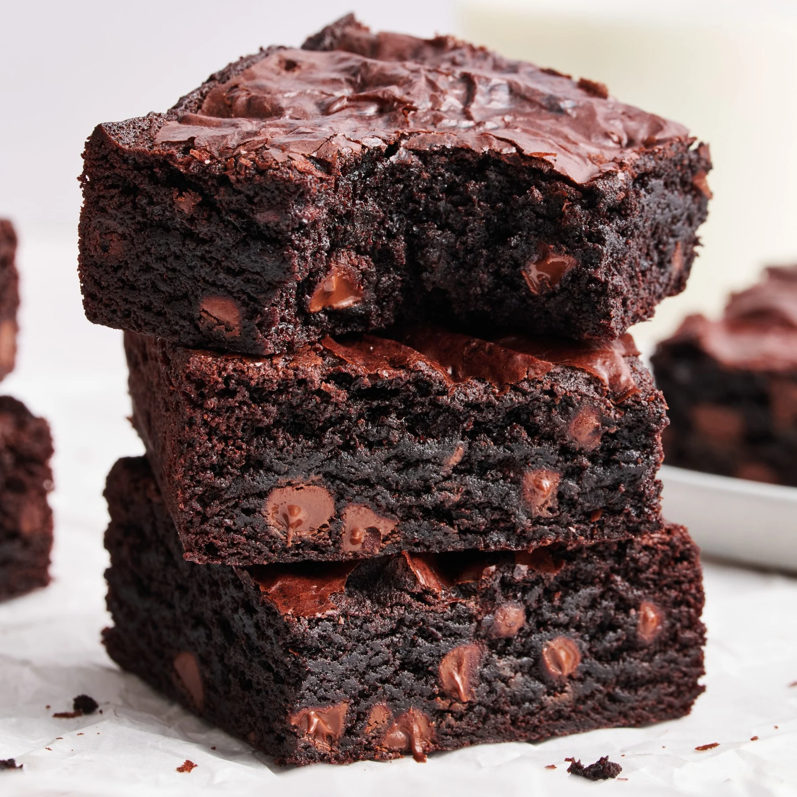

Recipe Book
- Home
- Recipes
- Tips
- Contributers
- About
Brownies
Submitted by Nicolas

A super easy brownie recipe for a squidgy chocolate bake.
Ingredients
- 185g unsalted butter
- 185g best dark chocolate
- 85g plain flour
- 40g cocoa powder
- 50g white chocolate
- 3 large eggs
- 275g golden caster sugar
Instructions
- Pre-heat oven to 350F. Grease an 8x8 square pan or a 9x5 loaf pan or line with parchment or foil; set aside.
- In a large microwave-safe mixing bowl, add the butter and microwave for 1 minute or until completely melted. Add the sugar and cocoa powder and whisk vigorously for at least a minute, until the sugar has dissolved.
- Add eggs one at a time then vanilla and whisk for at least 1 minute, until well combined and batter is shiny.
- Stir in flour and salt until the flour is fully combined. Be careful not to overmix mix.
- (optional) fold in 1/2 cup of nuts, raisins, chocolate chips or anything you desire.
- Spread in pan and bake for approximately 20 minutes or until the center is slightly set. Be careful not to over-bake!
- Cool completely then cut into 9 large squares or 16 small squares ( I cut mine into 16)